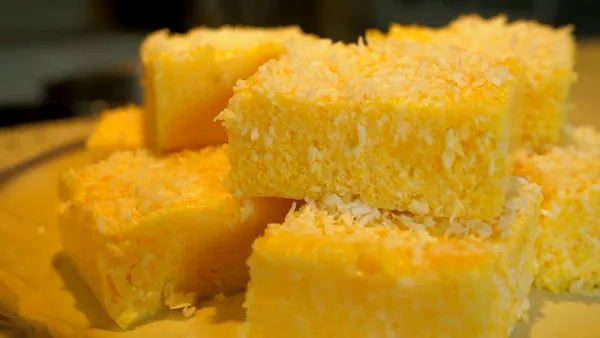
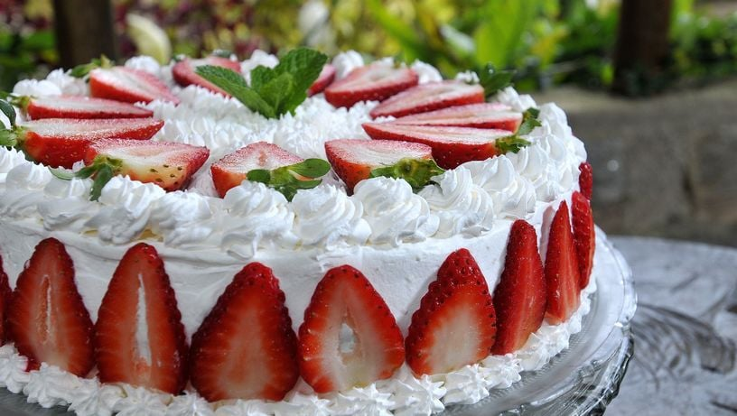
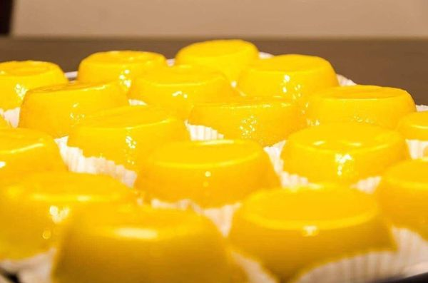
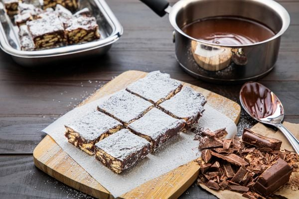

Muxá Capixaba
- 500g de canjiquinha de milho
- 1 litro e meio de água
- 600ml de leite (2 xícaras e meia)
- 240g de açúcar (2 xícaras)
- 120ml de leite de coco (meia xícara)
- 120g de coco ralado (1 xícara)
- Coco ralado para polvilhar
Ingredientes:
- Deixe a canjiquinha de molho na água.
- Após 24 horas, cozinhe a canjiquinha por cerca de 30 minutos até que fique bem macia.
- Em uma panela, coloque a canjiquinha, o leite, o açúcar e o leite de coco.
- Cozinhe, mexendo sempre, por cerca de 10 minutos até começar a engrossar e ficar com aspecto de polenta.
- Adicione o coco ralado e misture.
- Umedeça uma assadeira com água e distribua a massa espalhando por igual.
- Polvilhe o coco ralado.
- Leve à geladeira por 2 horas ou até dar o ponto de corte.
Modo de Preparo:

Torta de Morango
- 06 ovos
- 01 xícara de leite
- 2/5 xícara de trigo
- 02 xícara de açúcar refinado
- 01 colher de sopa de fermento em pó
- 03 xícaras de leite
- 395g de leite condensado (uma lata)
- 03 gemas
- 03 colheres de sopa de amido de milho
- 250g de morango picado
Ingredientes (massa):
Ingredientes (recheio):
- Bata as claras em neve
- Misture o açúcar
- Depois acrescente as 06 gemas e o leite aquecido por um minuto
- Adicione o trigo e fermento em pó
- Asse em forno médio por média de 30 minutos, dependendo de cada forno
Modo de Preparo (massa):
- Misture em uma panela 03 xícaras de leite, 395g de leite condensado (uma lata), 03 gemas e 03 colheres de sopa
de amido de milho
- leve tudo ao fogo médio e cozinhe até engrossar.
- Depois de frio acrescente 250g de morango picado.
Modo de Preparo (recheio):
- Cubra toda a torta com chantilly e enfeite com morangos cortados ao meio.
Para Decorar:

Quindim
- 14 colheres de sopa de açúcar
- 100g de coco ralado
- 1 colher de sopa de manteiga
- 10 gemas passadas na peneira
- 2 ovos inteiros
- Manteiga para untar as forminhas
Ingredientes:
- Em um recipiente, misture o açúcar e o coco ralado.
- Junte a manteiga, as gemas e os ovos.
- Mexa para se agregarem todos os ingredientes.
- Coloque porções da massa em mini-fôrmas (próprias para quindim), untadas com manteiga e polvilhadas com açúcar.
- Acomode-as em uma assadeira e leve ao forno preaquecido (180ºC) em banho-maria por 30 minutos.
- Retire das forminhas e decore a gosto.
Modo de Preparo:
- Coco ralado fresco: O coco ralado fresco confere um sabor mais intenso ao quindim.
- Gemas peneiradas: Peneirar as gemas garante uma textura mais homogênea à massa.
- Banho-maria: Assar o quindim em banho-maria evita que ele rache e garante um cozimento uniforme.
- Tempo de forno: Respeite o tempo de forno indicado na receita para garantir que o quindim fique com a consistência ideal.
Dicas:

Palha Italiana
- 1 lata de leite condensado
- ½ lata de creme de leite
- 150g de chocolate meio amargo de boa qualidade
- 2 colheres (sopa) de manteiga
- 1 pacote de biscoito Maria
- Açúcar de confeiteiro para finalizar
- Papel manteiga
Ingredientes:
- Em uma panela, misture o leite condensado, o creme de leite, o chocolate e a manteiga.
- Cozinhe em fogo médio até dar ponto de brigadeiro, que é quando a mistura começa a se desgrudar do fundo da panela.
- Triture os biscoitos grosseiramente com as mãos e acrescente ao brigadeiro, misturando até ficar homogêneo.
- Distribua essa massa sobre uma travessa forrada com papel manteiga e nivele para que fique bem reta
- Leve à geladeira para ganhar consistência e em seguida corte em quadrados iguais, usando uma faca untada com óleo.
- Para finalizar, polvilhe açúcar de confeiteiro.
Modo de Preparo (recheio):